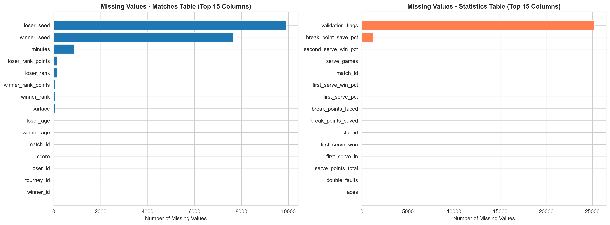
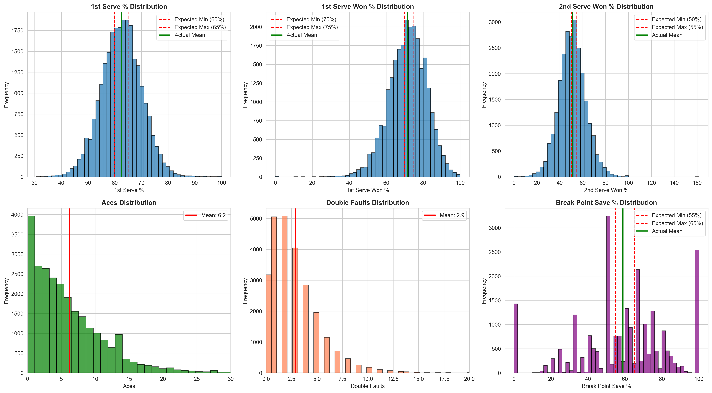
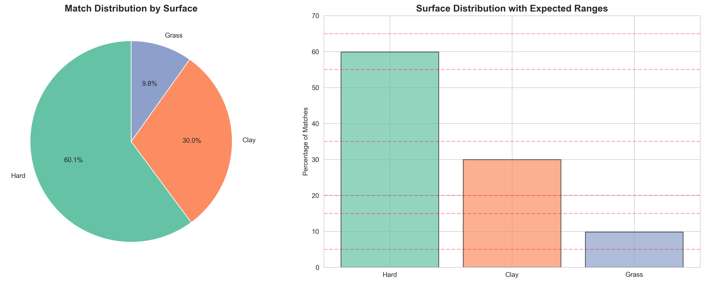
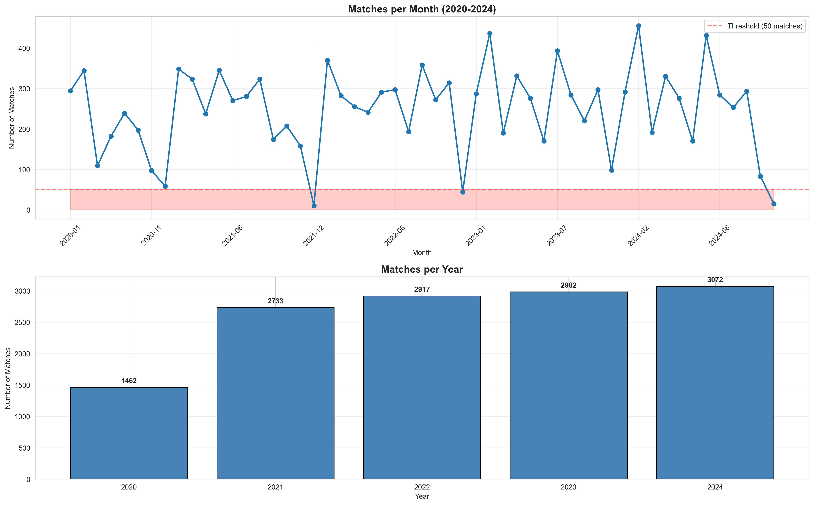

🎾 ATP Tennis Data Quality Validation Report
Executive Summary
Statistics Coverage
95.9%
1. Completeness Checks
✅ Matches with complete statistics: 12,621 (95.9%)
✅ Statistics records with data: 25,242 (100.0%)
⚠️ Players with <10 matches: 500 (64.1%)

2. Statistical Sanity Checks
Average 1st Serve %: 62.5% (expected: 60-65%)
Average 1st Serve Won %: 71.5% (expected: 70-75%)
Average 2nd Serve Won %: 51.0% (expected: 50-55%)
Average Aces: 6.18
Average Double Faults: 2.87

3. Surface Distribution

4. Temporal Coverage
Date Range: 2020-01-06 to 2024-12-18
Average matches per month: 248
Months with low coverage (<50): 3

5. Issues Identified
| check |
issue |
severity |
count |
| Completeness |
500 players have fewer than 10 matches |
INFO |
500 |
| Range Validation |
second_serve_win_pct has 1 values outside [0, 1] |
ERROR |
1 |
| Range Validation |
68 matches with >30 aces (suspicious) |
WARNING |
68 |
| Temporal Coverage |
3 months with fewer than 50 matches |
WARNING |
3 |
Conclusion
Overall Assessment: ⚠️ GOOD - Minor issues identified, review recommended
Recommendation: Review issues.csv before proceeding
Report Generated: 2025-12-27 21:01:41